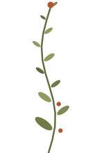
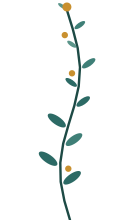
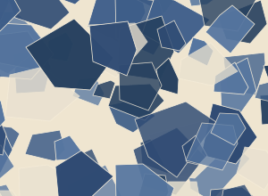

Teman cerita AI
Ngobrol kapan saja dalam Bahasa Indonesia sehari-hari, dengan empati dan tanpa menghakimi.

N2CIAS · dukungan kesehatan mental untuk institusi
Nesya adalah teman cerita berbasis AI yang bisa diajak bicara 24 jam dalam Bahasa Indonesia. Institusi Anda menyediakannya untuk karyawan, mahasiswa, atau tenaga kesehatan, dan hanya melihat pola anonim, bukan isi percakapan.
Dirancang bersama psikolog klinis · Dibuat di Jakarta
Bekerja bersama institusi di Indonesia


Satu layanan untuk dua kebutuhan: orang-orang Anda mendapat Nesya, teman cerita berbasis AI yang tersedia 24/7, dan institusi mendapat dashboard agregat untuk memahami kebutuhan kesehatan mental tanpa mengintip percakapan siapa pun.
Bukan sekadar chatbot. Alat yang membantu orang merasa lebih baik dan tahu langkah berikutnya.
Ngobrol kapan saja dalam Bahasa Indonesia sehari-hari, dengan empati dan tanpa menghakimi.
Beberapa pertanyaan untuk mengenali perasaan dan apa yang sedang dibutuhkan.
Latihan napas, grounding, dan refleksi singkat yang bisa dilakukan di mana saja.
Saat butuh lebih dari sekadar cerita, Nesya mengarahkan ke psikolog atau konselor.
Atas izin pengguna, psikolog menerima ringkasan agar sesi tidak mulai dari nol.
Pola agregat yang anonim untuk merencanakan program dukungan.

Banyak orang belum butuh psikolog. Mereka butuh tempat aman untuk bercerita dan tahu harus mulai dari mana. Institusi perlu memahami kebutuhan orang-orangnya tanpa membaca percakapan pribadi. Dan sesi satu-per-satu mahal kalau harus menjangkau semua orang.
Tidak semua karyawan siap langsung ke psikolog. Masalah sering baru terlihat setelah memengaruhi kinerja, absensi, atau semangat kerja.
Yang merawat orang lain juga butuh dukungan. Shift panjang jarang cocok dengan jam layanan konseling.
Mahasiswa yang butuh dukungan jauh lebih banyak dari kapasitas konselor kampus.
Program perlu cara untuk menjangkau banyak orang sekaligus dan memahami kebutuhan mereka secara agregat.
Dukungan kesehatan mental tidak harus menunggu sampai seseorang butuh psikolog.
01 / Bagaimana N2CIAS membantu
Tiga bagian yang bekerja bersama.

Ruang percakapan privat 24/7 untuk bercerita, refleksi, check-in, dan menghadapi stres sehari-hari dalam Bahasa Indonesia yang natural.


Dari latihan mandiri, percakapan dengan Nesya, sampai rujukan ke psikolog dan eskalasi ke manusia saat dibutuhkan.

Keluhan terbanyak, kebutuhan dukungan, tren emosi, dan pemakaian layanan, semuanya agregat. Tidak ada akses ke percakapan pribadi.
Check-in, latihan napas, dan refleksi singkat.
Percakapan untuk stres, cemas, dan rasa kewalahan.
Dengan ringkasan yang dibagikan atas izin pengguna.
Saat ada tanda risiko, langsung ke bantuan yang sesuai.
Lewat web, tanpa unduh aplikasi. Obrolan bebas atau check-in singkat.
Tema dan tingkat kebutuhan dikenali dari percakapan. Tanpa diagnosis.
Latihan mandiri, lanjut dengan Nesya, atau rujukan ke psikolog.
Atas izin pengguna, ringkasan dikirim sebelum sesi dimulai.
Tren anonim untuk perencanaan program, bukan isi percakapan.
02 / Studi kasus
Tekanannya berbeda di setiap tempat. Kebutuhannya mirip: dukungan yang mudah dijangkau, tanda yang terlihat lebih awal, dan program yang tepat sasaran.
Mahasiswa punya langkah pertama yang mudah lewat Nesya. Tim kemahasiswaan melihat kapan dan di mana kebutuhan naik, misalnya menjelang ujian. N2CIAS melengkapi konselor kampus, tidak menggantikan.
Bekerja bersama UI, ITB, UGM, Binus, Telkom University, dan perguruan tinggi lain di Indonesia.
Hitung kebutuhan untuk mahasiswa AndaPerawat, dokter, dan staf bisa bercerita sesudah shift malam tanpa menunggu jam layanan buka. Manajemen melihat unit mana yang paling tertekan.
Hitung kebutuhan untuk staf AndaKaryawan yang belum siap ke psikolog tetap punya tempat untuk mulai. HR melihat tren tanpa tahu siapa bercerita apa.
Hitung kebutuhan untuk staf AndaDari Puskesmas sampai Dinas Kesehatan, Nesya memberi langkah pertama yang mudah dijangkau dan data agregat untuk perencanaan program.
Bicara dengan tim kami03 / Perencana kapasitas
Semua orang dalam program mendapat akses. Kapasitas menentukan berapa banyak sesi dukungan bersama yang tersedia setiap bulan.
Ini perkiraan awal. Biaya akhir tergantung jumlah peserta, kapasitas, kebutuhan laporan, dan cakupan implementasi.
Pola pemakaian dan kesehatan mental yang anonim dan agregat, untuk perencanaan program, pencegahan, dan alokasi dukungan.
Langkah yang dipilih pengguna setelah setiap check-in.
Puncak di pertengahan bulan, bertepatan dengan masa ujian atau tenggat kerja.
Institusi tidak pernah melihat percakapan pribadi. Angka hanya muncul jika kelompoknya cukup besar sehingga tidak ada orang yang bisa dikenali.
N2CIAS mengenali tanda dan kebutuhan dukungan. Diagnosis tetap tugas tenaga profesional.
Nesya adalah langkah pertama dan penunjuk arah. Penanganan lebih dalam tetap oleh manusia.
Institusi tidak melihat percakapan. Dashboard hanya menampilkan pola agregat yang anonim.
Saat ada tanda risiko, pengguna diarahkan ke psikolog atau jalur bantuan yang sesuai.
04 / Dari Indonesia, untuk Indonesia
Nesya mengerti “capek banget”, “lagi down”, dan “pengen ngilang aja” seperti yang orang maksud, bukan terjemahan kaku.
Mengikuti alur universitas, rumah sakit, BUMN, korporasi, sampai Puskesmas dan Dinas Kesehatan.
Dibangun di Jakarta oleh TenangAI: psikolog, desainer, dan praktisi AI yang melayani institusi Indonesia.
05 / Riset
Penelitian tentang pendamping AI untuk kesehatan mental yang kami pelajari dalam membangun Nesya.
Mulai dengan yang sudah tersedia, atau lewat pilot terstruktur sebelum implementasi yang lebih luas.
Pilot biasanya berjalan 8–12 minggu untuk satu populasi, dengan onboarding, target keberhasilan, dan evaluasi bersama.
Diskusikan pilot06 / FAQ
Tidak. Institusi hanya melihat angka agregat, dan hanya untuk kelompok yang cukup besar sehingga tidak ada individu yang bisa dikenali.
Bukan. Nesya adalah AI yang membantu orang bercerita, menenangkan diri, dan menemukan langkah berikutnya. Untuk penanganan lebih dalam, Nesya merujuk ke psikolog atau konselor.
Nesya mengarahkan pengguna ke layanan darurat dan jalur rujukan yang disepakati dengan institusi. N2CIAS bukan layanan krisis.
Tidak. Nesya bisa diakses lewat browser di ponsel maupun laptop.
Per peserta per bulan, sesuai tingkat kapasitas yang dipilih. Gunakan perencana kapasitas di atas, lalu kami sesuaikan saat diskusi.
Bisa. Banyak institusi memulai dengan pilot untuk satu fakultas, unit, atau departemen.
Kami akan membahas implementasi N2CIAS yang paling cocok untuk universitas, rumah sakit, perusahaan, atau program kesehatan masyarakat Anda.
Atau kirim email ke hai@tenangaja.co.id
N2CIAS membantu institusi membangun lapisan dukungan kesehatan mental yang lebih awal: check-in berbasis AI, navigasi perawatan, rujukan ke profesional, dan insight anonim.